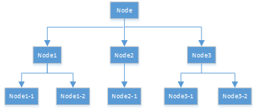
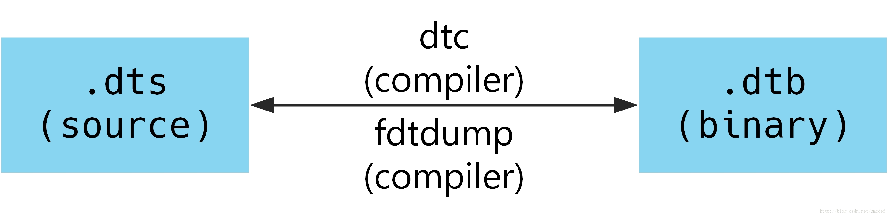

<!DOCTYPE html>
<html>
<head><meta name="generator" content="Hexo 3.9.0">
  <meta charset="utf-8">
  
  <title>Linux设备树 | 岁月静好</title>
  <meta name="viewport" content="width=device-width, initial-scale=1, maximum-scale=1">
  
    <meta name="keywords" content="Cyril Taylor,Cyril's Blog">
  
  <meta name="description" content="1. 设备树基础  1.1. 设备树的引入 1.2. 设备树特点 1.3. 编译设备树   2. 设备树dts/dtsi格式 3. 设备树dtb格式和结构 4. 内核head.S对uboot传参的处理 5. 设备树对平台信息的处理machine_desc 6. 设备树对运行时配置信息的处理 7. dtb到设备节点的转换 8. 设备节点到平台设备的转换 9. platform_device和pl">
<meta name="keywords" content="Linux,设备树">
<meta property="og:type" content="article">
<meta property="og:title" content="Linux设备树">
<meta property="og:url" content="https://cyriltaylor.github.io/posts/3787073306/index.html">
<meta property="og:site_name" content="岁月静好">
<meta property="og:description" content="1. 设备树基础  1.1. 设备树的引入 1.2. 设备树特点 1.3. 编译设备树   2. 设备树dts/dtsi格式 3. 设备树dtb格式和结构 4. 内核head.S对uboot传参的处理 5. 设备树对平台信息的处理machine_desc 6. 设备树对运行时配置信息的处理 7. dtb到设备节点的转换 8. 设备节点到平台设备的转换 9. platform_device和pl">
<meta property="og:locale" content="zh-CN">
<meta property="og:image" content="https://cyriltaylor.github.io/posts/3787073306/20181227111522313.png">
<meta property="og:image" content="https://cyriltaylor.github.io/posts/3787073306/20170818215801091.jpg">
<meta property="og:updated_time" content="2019-10-18T03:31:08.473Z">
<meta name="twitter:card" content="summary">
<meta name="twitter:title" content="Linux设备树">
<meta name="twitter:description" content="1. 设备树基础  1.1. 设备树的引入 1.2. 设备树特点 1.3. 编译设备树   2. 设备树dts/dtsi格式 3. 设备树dtb格式和结构 4. 内核head.S对uboot传参的处理 5. 设备树对平台信息的处理machine_desc 6. 设备树对运行时配置信息的处理 7. dtb到设备节点的转换 8. 设备节点到平台设备的转换 9. platform_device和pl">
<meta name="twitter:image" content="https://cyriltaylor.github.io/posts/3787073306/20181227111522313.png">
  
  
    <link rel="icon" href="/favicon.ico">
  
  <link href="//cdn.bootcss.com/font-awesome/4.7.0/css/font-awesome.min.css" rel="stylesheet" type="text/css">
  <link rel="stylesheet" href="../../css/style.css">
  <script src="../../js/pace.min.js"></script>
  

  
  

<link rel="stylesheet" href="/css/prism-xonokai.css" type="text/css">
<link rel="stylesheet" href="/css/prism-line-numbers.css" type="text/css"></head>
</html>
<body>
  <div id="container">
      <header id="header">
    <div id="banner"></div>
    <div id="header-outer">
        <div id="header-menu" class="header-menu-pos animated">
            <div class="header-menu-container">
                <a href="../../index.html" class="left">
                    <span class="site-title">Cyril&#39;s Blog</span>
                </a>
                <nav id="header-menu-nav" class="right">
                    
                    <a  href="../../index.html">
                        <i class="fa fa-home"></i>
                        <span>主页</span>
                    </a>
                    
                    <a  href="../../archives">
                        <i class="fa fa-archive"></i>
                        <span>归档</span>
                    </a>
                    
                    <a  href="../../about">
                        <i class="fa fa-user"></i>
                        <span>关于</span>
                    </a>
                    
                </nav>
                <a class="mobile-header-menu-button">
                    <i class="fa fa-bars"></i>
                </a>
            </div>
        </div>
        <div id="header-row">
            <div id="logo">
                <a href="../../index.html">
                    
                </a>
            </div>
            <div class="header-info">
                <div id="header-title">
                    
                    <h2>
                        Cyril&#39;s Blog
                    </h2>
                    
                </div>
                <div id="header-description">
                    
                    <h3>
                        一枚系统工程师自用的技术博客
                    </h3>
                    
                </div>
            </div>
            <nav class="header-nav">
                <div class="social">
                    
                        <a title="Github" target="_blank" href="//github.com/CyrilTaylor">
                            <i class="fa fa-github fa-2x"></i></a>
                    
                        <a title="Weibo" target="_blank" href="//www.weibo.com/CyrilTaylor">
                            <i class="fa fa-weibo fa-2x"></i></a>
                    
                </div>
            </nav>
        </div>
    </div>
</header>
      <div class="outer">
        <section id="main" class="body-wrap"><article id="post-Linux/Linux设备树" class="article article-type-post" itemscope itemprop="blogPost">
  <div class="article-inner">
    
      <header class="article-header">
        
  
    <h1 class="post-title" itemprop="name">
      <span class="article-type type-reprint">转</span>Linux设备树
    </h1>
    <div class="post-title-bar">
      <ul>
          
              <li>
                  <i class="fa fa-book"></i>
                  
                      <a href="/categories/Linux/">Linux</a>
                  
              </li>
          
        <li>
          <i class="fa fa-calendar"></i>  2019-10-09
        </li>
        <li>
          <i class="fa fa-eye"></i>
          <span id="busuanzi_value_page_pv"></span>
        </li>
      </ul>
    </div>
  

          
      </header>
    
    <div class="article-entry post-content" itemprop="articleBody">
      
            
            <!-- TOC -->
<ul>
<li><a href="#1-%E8%AE%BE%E5%A4%87%E6%A0%91%E5%9F%BA%E7%A1%80">1. 设备树基础</a>
<ul>
<li><a href="#11-%E8%AE%BE%E5%A4%87%E6%A0%91%E7%9A%84%E5%BC%95%E5%85%A5">1.1. 设备树的引入</a></li>
<li><a href="#12-%E8%AE%BE%E5%A4%87%E6%A0%91%E7%89%B9%E7%82%B9">1.2. 设备树特点</a></li>
<li><a href="#13-%E7%BC%96%E8%AF%91%E8%AE%BE%E5%A4%87%E6%A0%91">1.3. 编译设备树</a></li>
</ul>
</li>
<li><a href="#2-%E8%AE%BE%E5%A4%87%E6%A0%91dtsdtsi%E6%A0%BC%E5%BC%8F">2. 设备树dts/dtsi格式</a></li>
<li><a href="#3-%E8%AE%BE%E5%A4%87%E6%A0%91dtb%E6%A0%BC%E5%BC%8F%E5%92%8C%E7%BB%93%E6%9E%84">3. 设备树dtb格式和结构</a></li>
<li><a href="#4-%E5%86%85%E6%A0%B8heads%E5%AF%B9uboot%E4%BC%A0%E5%8F%82%E7%9A%84%E5%A4%84%E7%90%86">4. 内核head.S对uboot传参的处理</a></li>
<li><a href="#5-%E8%AE%BE%E5%A4%87%E6%A0%91%E5%AF%B9%E5%B9%B3%E5%8F%B0%E4%BF%A1%E6%81%AF%E7%9A%84%E5%A4%84%E7%90%86machine_desc">5. 设备树对平台信息的处理machine_desc</a></li>
<li><a href="#6-%E8%AE%BE%E5%A4%87%E6%A0%91%E5%AF%B9%E8%BF%90%E8%A1%8C%E6%97%B6%E9%85%8D%E7%BD%AE%E4%BF%A1%E6%81%AF%E7%9A%84%E5%A4%84%E7%90%86">6. 设备树对运行时配置信息的处理</a></li>
<li><a href="#7-dtb%E5%88%B0%E8%AE%BE%E5%A4%87%E8%8A%82%E7%82%B9%E7%9A%84%E8%BD%AC%E6%8D%A2">7. dtb到设备节点的转换</a></li>
<li><a href="#8-%E8%AE%BE%E5%A4%87%E8%8A%82%E7%82%B9%E5%88%B0%E5%B9%B3%E5%8F%B0%E8%AE%BE%E5%A4%87%E7%9A%84%E8%BD%AC%E6%8D%A2">8. 设备节点到平台设备的转换</a></li>
<li><a href="#9-platform_device%E5%92%8Cplatform_driver%E5%A6%82%E4%BD%95%E8%AE%A9%E5%8C%B9%E9%85%8D">9. platform_device和platform_driver如何让匹配</a></li>
<li><a href="#10-%E5%9C%A8%E6%A0%B9%E6%96%87%E4%BB%B6%E7%B3%BB%E7%BB%9F%E4%B8%AD%E6%9F%A5%E7%9C%8B%E8%AE%BE%E5%A4%87%E6%A0%91">10. 在根文件系统中查看设备树</a></li>
<li><a href="#11-%E5%86%85%E6%A0%B8%E4%B8%AD%E8%AE%BE%E5%A4%87%E6%A0%91%E7%9A%84%E6%93%8D%E4%BD%9C%E5%87%BD%E6%95%B0">11. 内核中设备树的操作函数</a></li>
<li><a href="#12-uboot%E5%A6%82%E4%BD%95%E7%BB%99%E5%86%85%E6%A0%B8%E4%BC%A0dtb%E6%96%87%E4%BB%B6">12. uboot如何给内核传dtb文件</a></li>
<li><a href="#13-%E6%9C%89%E4%BA%86%E8%AE%BE%E5%A4%87%E6%A0%91%E5%90%8E%E6%96%B0%E5%86%85%E6%A0%B8%E5%AF%B9%E4%BA%8E%E8%AE%BE%E5%A4%87%E5%A4%84%E7%90%86%E7%9A%84%E4%B8%8D%E5%90%8C%E4%B9%8B%E5%A4%84">13. 有了设备树后新内核对于设备处理的不同之处</a></li>
<li><a href="#14-aliases%E8%8A%82%E7%82%B9%E5%88%86%E6%9E%90">14. aliases节点分析</a></li>
<li><a href="#15-%E5%BC%95%E5%85%A5%E8%AE%BE%E5%A4%87%E6%A0%91%E5%AF%B9%E4%B8%AD%E6%96%AD%E7%9A%84%E5%BD%B1%E5%93%8D">15. 引入设备树对中断的影响</a></li>
<li><a href="#16-%E7%95%AA%E5%A4%96%E7%AF%87-%E4%B8%AD%E6%96%AD%E5%AD%90%E7%B3%BB%E7%BB%9F%E4%B9%8Birq-domain%E4%BB%8B%E7%BB%8D">16. 番外篇-中断子系统之IRQ Domain介绍</a></li>
<li><a href="#17-%E7%95%AA%E5%A4%96%E7%AF%87-%E4%B8%AD%E6%96%AD%E5%AD%90%E7%B3%BB%E7%BB%9F%E4%B9%8Birq-number%E5%92%8C%E4%B8%AD%E6%96%AD%E6%8F%8F%E8%BF%B0%E7%AC%A6">17. 番外篇-中断子系统之IRQ number和中断描述符</a></li>
<li><a href="#18-%E7%95%AA%E5%A4%96%E7%AF%87-%E4%B8%AD%E6%96%AD%E5%AD%90%E7%B3%BB%E7%BB%9F%E4%B9%8B%E5%86%85%E6%A0%B8%E5%AF%B9%E4%B8%AD%E6%96%AD%E6%8E%A7%E5%88%B6%E5%99%A8%E7%9A%84%E8%A7%A3%E6%9E%90">18. 番外篇-中断子系统之内核对中断控制器的解析</a></li>
<li><a href="#19-%E7%95%AA%E5%A4%96%E7%AF%87-%E4%B8%AD%E6%96%AD%E5%AD%90%E7%B3%BB%E7%BB%9F%E4%B9%8B%E5%88%9D%E5%A7%8B%E5%8C%96%E4%B8%80%E4%B8%AA%E4%B8%AD%E6%96%AD%E6%8E%A7%E5%88%B6%E5%99%A8">19. 番外篇-中断子系统之初始化一个中断控制器</a></li>
<li><a href="#20-%E7%95%AA%E5%A4%96%E7%AF%87-%E4%B8%AD%E6%96%AD%E5%AD%90%E7%B3%BB%E7%BB%9F%E4%B9%8B%E4%B8%AD%E6%96%AD%E5%8F%B7%E7%9A%84%E6%98%A0%E5%B0%84%E4%B8%8E%E5%8F%8D%E6%98%A0%E5%B0%84%E4%B8%80">20. 番外篇-中断子系统之中断号的映射与反映射[一]</a></li>
<li><a href="#21-%E7%95%AA%E5%A4%96%E7%AF%87-%E4%B8%AD%E6%96%AD%E5%AD%90%E7%B3%BB%E7%BB%9F%E4%B9%8B%E4%B8%AD%E6%96%AD%E5%8F%B7%E7%9A%84%E6%98%A0%E5%B0%84%E4%B8%8E%E5%8F%8D%E6%98%A0%E5%B0%84%E4%BA%8C">21. 番外篇-中断子系统之中断号的映射与反映射[二]</a></li>
<li><a href="#22-%E7%95%AA%E5%A4%96%E7%AF%87-%E4%B8%AD%E6%96%AD%E5%AD%90%E7%B3%BB%E7%BB%9F%E4%B9%8B%E7%AE%80%E5%8D%95%E4%B8%BE%E4%BE%8B%E4%BD%BF%E7%94%A8">22. 番外篇-中断子系统之简单举例使用</a></li>
<li><a href="#23-%E7%95%AA%E5%A4%96%E7%AF%87-%E4%B8%AD%E6%96%AD%E5%AD%90%E7%B3%BB%E7%BB%9F%E4%B9%8B%E9%A9%B1%E5%8A%A8%E7%94%B3%E8%AF%B7api">23. 番外篇-中断子系统之驱动申请API</a></li>
<li><a href="#24-%E7%95%AA%E5%A4%96%E7%AF%87-%E4%B8%AD%E6%96%AD%E5%AD%90%E7%B3%BB%E7%BB%9F%E4%B9%8Bsoftirq">24. 番外篇-中断子系统之softirq</a></li>
<li><a href="#25-%E7%95%AA%E5%A4%96%E7%AF%87-%E4%B8%AD%E6%96%AD%E5%AD%90%E7%B3%BB%E7%BB%9F%E4%B9%8Btasklet">25. 番外篇-中断子系统之tasklet</a></li>
<li><a href="#26-%E7%95%AA%E5%A4%96%E7%AF%87-%E4%B8%AD%E6%96%AD%E5%AD%90%E7%B3%BB%E7%BB%9F%E4%B9%8Bworkqueue1">26. 番外篇-中断子系统之workqueue[1]</a></li>
<li><a href="#27-%E7%95%AA%E5%A4%96%E7%AF%87-%E4%B8%AD%E6%96%AD%E5%AD%90%E7%B3%BB%E7%BB%9F%E4%B9%8Bcmwq%E6%A6%82%E8%BF%B02">27. 番外篇-中断子系统之CMWQ概述[2]</a></li>
<li><a href="#28-%E7%95%AA%E5%A4%96%E7%AF%87-%E4%B8%AD%E6%96%AD%E5%AD%90%E7%B3%BB%E7%BB%9F%E4%B9%8Bworkqueue%E5%88%9B%E5%BB%BA3">28. 番外篇-中断子系统之workqueue创建[3]</a></li>
<li><a href="#29-%E7%95%AA%E5%A4%96%E7%AF%87-%E4%B8%AD%E6%96%AD%E5%AD%90%E7%B3%BB%E7%BB%9F%E4%B9%8Bworkqueue%E5%A4%84%E7%90%86work4">29. 番外篇-中断子系统之workqueue处理work[4]</a></li>
<li><a href="#30-%E7%95%AA%E5%A4%96%E7%AF%87-%E4%B8%AD%E6%96%AD%E5%AD%90%E7%B3%BB%E7%BB%9F%E4%B9%8Bworkqueue%E4%BD%BF%E7%94%A8">30. 番外篇-中断子系统之workqueue使用</a></li>
</ul>
<!-- /TOC -->
<a id="more"></a>
<h2 id="1-设备树基础"><a class="markdownIt-Anchor" href="#1-设备树基础"></a> 1. 设备树基础</h2>
<h3 id="11-设备树的引入"><a class="markdownIt-Anchor" href="#11-设备树的引入"></a> 1.1. 设备树的引入</h3>
<p>Linus Torvalds在2011年3月17日的ARM Linux邮件列表宣称“this whole ARM thing is a fucking pain in the ass”，ARM Linux社区对此作出了回应，引入设备树。</p>
<p>ARM Device Tree起源于OpenFirmware (OF)，在过去的Linux中，arch/arm/plat-xxx和arch/arm/mach-xxx中充斥着大量的垃圾代码，相当多数的代码只是在描述板级细节，而这些板级细节对于内核来讲，不过是垃圾，如板上的platform设备、resource、i2c_board_info、spi_board_info以及各种硬件的platform_data。为了改变这种局面，Linux社区的大牛们参考了PowerPC等体系架构中使用的Flattened Device Tree（FDT），也采用了Device Tree结构，许多硬件的细节可以直接透过它传递给Linux，而不再需要在kernel中进行大量的冗余编码。</p>
<p>Device Tree是一种描述硬件的数据结构，它起源于 OpenFirmware (OF)。在Linux 2.6中，ARM架构的板极硬件细节过多地被硬编码在arch/arm/plat-xxx和arch/arm/mach-xxx，采用Device Tree后，许多硬件的细节可以直接透过它传递给Linux，而不再需要在kernel中进行大量的冗余编码。</p>
<p>Device Tree由一系列被命名的结点（node）和属性（property）组成，而结点本身可包含子结点。所谓属性，其实就是成对出现的name和value。在Device Tree中，可描述的信息包括（原先这些信息大多被hard code到kernel中）：</p>
<ul>
<li>CPU的数量和类别</li>
<li>内存基地址和大小</li>
<li>总线和桥</li>
<li>外设连接</li>
<li>中断控制器和中断使用情况</li>
<li>GPIO控制器和GPIO使用情况</li>
<li>Clock控制器和Clock使用情况</li>
</ul>
<p>这种以树状节点的方式描述一个设备的各种硬件信息：CPU、GPIO、时钟、中断、内存等，形成类似文本文件，很好的解决了这些问题。</p>
<p></p>
<p>它基本上就是画一棵电路板上CPU、总线、设备组成的树，Bootloader会将这棵树传递给内核，然后内核可以识别这棵树，并根据它展开出Linux内核中的platform_device、i2c_client、spi_device等设备，而这些设备用到的内存、IRQ等资源，也被传递给了内核，内核会将这些资源绑定给展开的相应的设备。</p>
<p>通常由.dts文件以文本方式对系统设备树进行描述，经过Device Tree Compiler(dtc)将dts文件转换成二进制文件binary device tree blob(dtb)，.dtb文件可由Linux内核解析，有了device tree就可以在不改动Linux内核的情况下，对不同的平台实现无差异的支持，只需更换相应的dts文件，即可满足。</p>
<h3 id="12-设备树特点"><a class="markdownIt-Anchor" href="#12-设备树特点"></a> 1.2. 设备树特点</h3>
<ol>
<li>
<p>对于传统字符驱动的编写有两种方式：</p>
<p>一是在驱动程序中，直接写死硬件资源，如：GPIO、寄存器地址、中断号等，使得硬件改动时，必须修改驱动程序。</p>
<p>二是采用总线驱动platform模型，将硬件资源与驱动软件分离，在platform_device中描述硬件资源，arch/arm/mach-xxx对应的文件，便是以platform_device描述各自CPU对应的硬件资源；在platform_driver中分配/设置/注册 file_operations结构体, 并从platform_device获得硬件资源。这种编写方式使得驱动易于扩展，硬件改动时只需修改platform_device或者platform_driver，这就导致linux内核产生大量的冗余代码。</p>
</li>
<li>
<p>使用设备树的特点在于，在设备树dts文件指定硬件资源，dts被编译为dtb文件, 在启动单板时，U-boot会将dtb文件传给内核，使得驱动程序与硬件分离，我们只需要修改dts文件，便能实现需求。这就是设备树易于扩展，硬件有变动时不需要重新编译内核或驱动程序，只需要提供不一样的dtb文件。</p>
</li>
</ol>
<h3 id="13-编译设备树"><a class="markdownIt-Anchor" href="#13-编译设备树"></a> 1.3. 编译设备树</h3>
<p>设备树文件的格式为dts，包含的头文件格式为dtsi，dts文件是一种人可以看懂的编码格式。但是uboot和linux不能直接识别，他们只能识别二进制文件，所以需要把dts文件编译成dtb文件。dtb文件是一种可以被kernel和uboot识别的二进制文件。把dts编译成dtb文件的工具是dtc。Linux源码目录下scripts/dtc目录包含dtc工具的源码。在Linux的scripts/dtc目录下除了提供dtc工具外，也可以自己安装dtc工具，linux下执行：<code>sudo apt-get install device-tree-compiler</code>安装dtc工具。其中还提供了一个fdtdump的工具，可以反编译dtb文件。dts和dtb文件的转换如图所示。</p>
<p>dtc工具的使用方法是：<code>dtc –I dts –O dtb –o xxx.dtb xxx.dts</code>，即可生成dts文件对应的dtb文件了。</p>
<p></p>
<p>在编译linux内核时。也可以直接make dtbs生成dtb文件。</p>
<h2 id="2-设备树dtsdtsi格式"><a class="markdownIt-Anchor" href="#2-设备树dtsdtsi格式"></a> 2. 设备树dts/dtsi格式</h2>
<h2 id="3-设备树dtb格式和结构"><a class="markdownIt-Anchor" href="#3-设备树dtb格式和结构"></a> 3. 设备树dtb格式和结构</h2>
<h2 id="4-内核heads对uboot传参的处理"><a class="markdownIt-Anchor" href="#4-内核heads对uboot传参的处理"></a> 4. 内核head.S对uboot传参的处理</h2>
<h2 id="5-设备树对平台信息的处理machine_desc"><a class="markdownIt-Anchor" href="#5-设备树对平台信息的处理machine_desc"></a> 5. 设备树对平台信息的处理machine_desc</h2>
<h2 id="6-设备树对运行时配置信息的处理"><a class="markdownIt-Anchor" href="#6-设备树对运行时配置信息的处理"></a> 6. 设备树对运行时配置信息的处理</h2>
<h2 id="7-dtb到设备节点的转换"><a class="markdownIt-Anchor" href="#7-dtb到设备节点的转换"></a> 7. dtb到设备节点的转换</h2>
<h2 id="8-设备节点到平台设备的转换"><a class="markdownIt-Anchor" href="#8-设备节点到平台设备的转换"></a> 8. 设备节点到平台设备的转换</h2>
<h2 id="9-platform_device和platform_driver如何让匹配"><a class="markdownIt-Anchor" href="#9-platform_device和platform_driver如何让匹配"></a> 9. platform_device和platform_driver如何让匹配</h2>
<h2 id="10-在根文件系统中查看设备树"><a class="markdownIt-Anchor" href="#10-在根文件系统中查看设备树"></a> 10. 在根文件系统中查看设备树</h2>
<h2 id="11-内核中设备树的操作函数"><a class="markdownIt-Anchor" href="#11-内核中设备树的操作函数"></a> 11. 内核中设备树的操作函数</h2>
<p>内核中开放出来的接口函数的声明大多在include/linux/下面，关于设备树的都是以ofxxx.h形式命名</p>
<figure class="highlight cpp"><table><tr><td class="gutter"><pre><span class="line">1</span><br><span class="line">2</span><br><span class="line">3</span><br><span class="line">4</span><br><span class="line">5</span><br><span class="line">6</span><br><span class="line">7</span><br><span class="line">8</span><br><span class="line">9</span><br><span class="line">10</span><br><span class="line">11</span><br><span class="line">12</span><br><span class="line">13</span><br><span class="line">14</span><br><span class="line">15</span><br><span class="line">16</span><br><span class="line">17</span><br><span class="line">18</span><br><span class="line">19</span><br><span class="line">20</span><br><span class="line">21</span><br><span class="line">22</span><br><span class="line">23</span><br><span class="line">24</span><br><span class="line">25</span><br><span class="line">26</span><br><span class="line">27</span><br><span class="line">28</span><br></pre></td><td class="code"><pre><span class="line"><span class="comment">/*--- 处理dtb文件 ---*/</span></span><br><span class="line">include/linux/of_fdt.h          <span class="comment">// dtb文件的相关操作函数, 我们一般用不到, 因为dtb文件在内核中已经被转换为device_node树(它更易于使用)</span></span><br><span class="line"></span><br><span class="line"><span class="comment">/*--- 处理device_node ---*/</span></span><br><span class="line">include/linux/of_address.h      <span class="comment">// 地址相关的函数, 如</span></span><br><span class="line">                                <span class="comment">// of_get_address(获得reg属性中的addr, size值)</span></span><br><span class="line">include/linux/of_clk.h</span><br><span class="line">include/linux/of_dma.h          <span class="comment">// 设备树中DMA相关属性的函数</span></span><br><span class="line">include/linux/of_gpio.h         <span class="comment">// GPIO相关的函数</span></span><br><span class="line">include/linux/of_graph.h        <span class="comment">// GPU相关驱动中用到的函数, 从设备树中获得GPU信息</span></span><br><span class="line">include/linux/of.h              <span class="comment">// 提供设备树的一般处理函数, 如</span></span><br><span class="line">                                <span class="comment">// of_property_read_u32(读取某个属性的u32值)</span></span><br><span class="line">                                <span class="comment">// of_get_child_count(获取某个device_node的子节点数)</span></span><br><span class="line">include/linux/of_iommu.h</span><br><span class="line">include/linux/of_irq.h          <span class="comment">// 中断相关的函数</span></span><br><span class="line">include/linux/of_mdio.h         <span class="comment">// MDIO (Ethernet PHY) API</span></span><br><span class="line">include/linux/of_net.h          <span class="comment">// OF helpers for network devices.</span></span><br><span class="line">include/linux/of_pci.h          <span class="comment">// PCI相关函数</span></span><br><span class="line">include/linux/of_pdt.h</span><br><span class="line">include/linux/of_reserved_mem.h <span class="comment">// reserved_mem的相关函数</span></span><br><span class="line"></span><br><span class="line"><span class="comment">/*--- 处理 platform_device ---*/</span></span><br><span class="line">include/linux/of_device.h       <span class="comment">// 设备相关的函数，如</span></span><br><span class="line">                                <span class="comment">// of_match_device(从matches数组中取出与当前设备最匹配的一项)</span></span><br><span class="line">include/linux/of_platform.h     <span class="comment">// 把device_node转换为platform_device时用到的函数，如</span></span><br><span class="line">                                <span class="comment">// of_device_alloc(根据device_node分配设置platform_device)</span></span><br><span class="line">                                <span class="comment">// of_find_device_by_node(根据device_node查找到platform_device)</span></span><br><span class="line">                                <span class="comment">// of_platform_bus_probe(处理device_node及它的子节点)</span></span><br></pre></td></tr></table></figure>
<p>以of_fdt.h 头文件中举几个例子</p>
<figure class="highlight cpp"><table><tr><td class="gutter"><pre><span class="line">1</span><br><span class="line">2</span><br><span class="line">3</span><br><span class="line">4</span><br><span class="line">5</span><br><span class="line">6</span><br><span class="line">7</span><br><span class="line">8</span><br><span class="line">9</span><br><span class="line">10</span><br><span class="line">11</span><br><span class="line">12</span><br><span class="line">13</span><br><span class="line">14</span><br><span class="line">15</span><br><span class="line">16</span><br><span class="line">17</span><br><span class="line">18</span><br><span class="line">19</span><br><span class="line">20</span><br></pre></td><td class="code"><pre><span class="line"><span class="comment">//blob也就是启动时保留的那块存放dtb文件内存的起始地址,下面分别是从dtb文件中扫描获取信息</span></span><br><span class="line"></span><br><span class="line"><span class="comment">/* For scanning an arbitrary device-tree at any time */</span></span><br><span class="line"><span class="function"><span class="keyword">extern</span> <span class="keyword">char</span> *<span class="title">of_fdt_get_string</span><span class="params">(<span class="keyword">const</span> <span class="keyword">void</span> *blob, u32 offset)</span></span>;   <span class="comment">// 从起始地址+偏移获取字符串</span></span><br><span class="line"><span class="function"><span class="keyword">extern</span> <span class="keyword">void</span> *<span class="title">of_fdt_get_property</span><span class="params">(<span class="keyword">const</span> <span class="keyword">void</span> *blob,              <span class="comment">// 通过起始地址</span></span></span></span><br><span class="line"><span class="function"><span class="params">                                 <span class="keyword">unsigned</span> <span class="keyword">long</span> node,</span></span></span><br><span class="line"><span class="function"><span class="params">                                 <span class="keyword">const</span> <span class="keyword">char</span> *name,</span></span></span><br><span class="line"><span class="function"><span class="params">                                 <span class="keyword">int</span> *size)</span></span>;</span><br><span class="line"><span class="function"><span class="keyword">extern</span> <span class="keyword">bool</span> <span class="title">of_fdt_is_big_endian</span><span class="params">(<span class="keyword">const</span> <span class="keyword">void</span> *blob,              <span class="comment">// 判断某个节点是不是大端存放的</span></span></span></span><br><span class="line"><span class="function"><span class="params">                                 <span class="keyword">unsigned</span> <span class="keyword">long</span> node)</span></span>;</span><br><span class="line"><span class="function"><span class="keyword">extern</span> <span class="keyword">int</span> <span class="title">of_fdt_match</span><span class="params">(<span class="keyword">const</span> <span class="keyword">void</span> *blob, <span class="keyword">unsigned</span> <span class="keyword">long</span> node,   <span class="comment">// 判断节点是不是匹配的</span></span></span></span><br><span class="line"><span class="function"><span class="params">                        <span class="keyword">const</span> <span class="keyword">char</span> *<span class="keyword">const</span> *compat)</span></span>;</span><br><span class="line"><span class="function"><span class="keyword">extern</span> <span class="keyword">void</span> *<span class="title">of_fdt_unflatten_tree</span><span class="params">(<span class="keyword">const</span> <span class="keyword">unsigned</span> <span class="keyword">long</span> *blob,   <span class="comment">// 解析dtb到device_node的函数</span></span></span></span><br><span class="line"><span class="function"><span class="params">                                   struct device_node *dad,</span></span></span><br><span class="line"><span class="function"><span class="params">                                   struct device_node **mynodes)</span></span>;</span><br><span class="line"></span><br><span class="line"><span class="comment">/* TBD: Temporary export of fdt globals - remove when code fully merged */</span></span><br><span class="line"><span class="keyword">extern</span> <span class="keyword">int</span> __initdata dt_root_addr_cells;                       <span class="comment">// 内核dtb文件的根节点中addr-cells的值</span></span><br><span class="line"><span class="keyword">extern</span> <span class="keyword">int</span> __initdata dt_root_size_cells;                       <span class="comment">// 内核dtb文件的根节点中size-cells的值</span></span><br><span class="line"><span class="keyword">extern</span> <span class="keyword">void</span> *initial_boot_params;                               <span class="comment">// 内核存放dtb文件的地址(虚拟地址)</span></span><br></pre></td></tr></table></figure>
<p>当然我们更多的是通过of.h文件中获取一个节点或者节点的信息</p>
<figure class="highlight cpp"><table><tr><td class="gutter"><pre><span class="line">1</span><br><span class="line">2</span><br><span class="line">3</span><br><span class="line">4</span><br><span class="line">5</span><br><span class="line">6</span><br><span class="line">7</span><br><span class="line">8</span><br><span class="line">9</span><br><span class="line">10</span><br><span class="line">11</span><br><span class="line">12</span><br><span class="line">13</span><br><span class="line">14</span><br><span class="line">15</span><br><span class="line">16</span><br><span class="line">17</span><br><span class="line">18</span><br><span class="line">19</span><br><span class="line">20</span><br><span class="line">21</span><br><span class="line">22</span><br><span class="line">23</span><br><span class="line">24</span><br><span class="line">25</span><br><span class="line">26</span><br><span class="line">27</span><br><span class="line">28</span><br><span class="line">29</span><br><span class="line">30</span><br><span class="line">31</span><br><span class="line">32</span><br><span class="line">33</span><br><span class="line">34</span><br><span class="line">35</span><br><span class="line">36</span><br><span class="line">37</span><br><span class="line">38</span><br><span class="line">39</span><br><span class="line">40</span><br><span class="line">41</span><br><span class="line">42</span><br><span class="line">43</span><br><span class="line">44</span><br></pre></td><td class="code"><pre><span class="line"><span class="comment">// 下面是在from节点下面,通过name,type或者compatible属性获取具有相同名字或类型的节点</span></span><br><span class="line"><span class="function"><span class="keyword">extern</span> struct device_node *<span class="title">of_find_node_by_name</span><span class="params">(struct device_node *from, <span class="keyword">const</span> <span class="keyword">char</span> *name)</span></span>;</span><br><span class="line"><span class="function"><span class="keyword">extern</span> struct device_node *<span class="title">of_find_node_by_type</span><span class="params">(struct device_node *from, <span class="keyword">const</span> <span class="keyword">char</span> *type)</span></span>;</span><br><span class="line"><span class="function"><span class="keyword">extern</span> struct device_node *<span class="title">of_find_compatible_node</span><span class="params">(struct device_node *from, <span class="keyword">const</span> <span class="keyword">char</span> *type, <span class="keyword">const</span> <span class="keyword">char</span> *compat)</span></span>;</span><br><span class="line"></span><br><span class="line"><span class="comment">// 当然这里也可以通过一个设备节点,获取里面某个属性的值</span></span><br><span class="line"><span class="function"><span class="keyword">static</span> <span class="keyword">inline</span> <span class="keyword">int</span> <span class="title">of_property_read_u8</span><span class="params">(<span class="keyword">const</span> struct device_node *np, <span class="keyword">const</span> <span class="keyword">char</span> *propname, u8 *out_value)</span></span></span><br><span class="line"><span class="function"></span>&#123;</span><br><span class="line">    <span class="keyword">return</span> of_property_read_u8_array(np, propname, out_value, <span class="number">1</span>);</span><br><span class="line">&#125;</span><br><span class="line"></span><br><span class="line"><span class="function"><span class="keyword">static</span> <span class="keyword">inline</span> <span class="keyword">int</span> <span class="title">of_property_read_u16</span><span class="params">(<span class="keyword">const</span> struct device_node *np, <span class="keyword">const</span> <span class="keyword">char</span> *propname, u16 *out_value)</span></span></span><br><span class="line"><span class="function"></span>&#123;</span><br><span class="line">    <span class="keyword">return</span> of_property_read_u16_array(np, propname, out_value, <span class="number">1</span>);</span><br><span class="line">&#125;</span><br><span class="line"></span><br><span class="line"><span class="function"><span class="keyword">static</span> <span class="keyword">inline</span> <span class="keyword">int</span> <span class="title">of_property_read_u32</span><span class="params">(<span class="keyword">const</span> struct device_node *np, <span class="keyword">const</span> <span class="keyword">char</span> *propname, u32 *out_value)</span></span></span><br><span class="line"><span class="function"></span>&#123;</span><br><span class="line">    <span class="keyword">return</span> of_property_read_u32_array(np, propname, out_value, <span class="number">1</span>);</span><br><span class="line">&#125;</span><br><span class="line"></span><br><span class="line"><span class="function"><span class="keyword">static</span> <span class="keyword">inline</span> <span class="keyword">int</span> <span class="title">of_property_read_s32</span><span class="params">(<span class="keyword">const</span> struct device_node *np, <span class="keyword">const</span> <span class="keyword">char</span> *propname, s32 *out_value)</span></span></span><br><span class="line"><span class="function"></span>&#123;</span><br><span class="line">    <span class="keyword">return</span> of_property_read_u32(np, propname, (u32*) out_value);</span><br><span class="line">&#125;</span><br><span class="line"></span><br><span class="line"><span class="comment">// 获取某个节点字符串数量</span></span><br><span class="line"><span class="function"><span class="keyword">static</span> <span class="keyword">inline</span> <span class="keyword">int</span> <span class="title">of_property_count_strings</span><span class="params">(<span class="keyword">const</span> struct device_node *np, <span class="keyword">const</span> <span class="keyword">char</span> *propname)</span></span></span><br><span class="line"><span class="function"></span>&#123;</span><br><span class="line">    <span class="keyword">return</span> of_property_read_string_helper(np, propname, <span class="literal">NULL</span>, <span class="number">0</span>, <span class="number">0</span>);</span><br><span class="line">&#125;</span><br><span class="line"></span><br><span class="line"><span class="comment">// 获取某个界定里的字符串数字</span></span><br><span class="line"><span class="function"><span class="keyword">static</span> <span class="keyword">inline</span> <span class="keyword">int</span> <span class="title">of_property_read_string_array</span><span class="params">(<span class="keyword">const</span> struct device_node *np, <span class="keyword">const</span> <span class="keyword">char</span> *propname, <span class="keyword">const</span> <span class="keyword">char</span> **out_strs, <span class="keyword">size_t</span> sz)</span></span></span><br><span class="line"><span class="function"></span>&#123;</span><br><span class="line">    <span class="keyword">return</span> of_property_read_string_helper(np, propname, out_strs, sz, <span class="number">0</span>);</span><br><span class="line">&#125;</span><br><span class="line"></span><br><span class="line"><span class="comment">// 同时也可以获取到字符串数组的某个指定的字符串</span></span><br><span class="line"><span class="function"><span class="keyword">static</span> <span class="keyword">inline</span> <span class="keyword">int</span> <span class="title">of_property_read_string_index</span><span class="params">(<span class="keyword">const</span> struct device_node *np, <span class="keyword">const</span> <span class="keyword">char</span> *propname, <span class="keyword">int</span> index, <span class="keyword">const</span> <span class="keyword">char</span> **output)</span></span></span><br><span class="line"><span class="function"></span>&#123;</span><br><span class="line">    <span class="keyword">int</span> rc = of_property_read_string_helper(np, propname, output, <span class="number">1</span>, index);</span><br><span class="line">    <span class="keyword">return</span> rc &lt; <span class="number">0</span> ? rc : <span class="number">0</span>;</span><br><span class="line">&#125;</span><br></pre></td></tr></table></figure>
<p>基本上我们想到的获取设备树中那种信息，都会有相应的函数接口。我们只需要调用就可以了。</p>
<h2 id="12-uboot如何给内核传dtb文件"><a class="markdownIt-Anchor" href="#12-uboot如何给内核传dtb文件"></a> 12. uboot如何给内核传dtb文件</h2>
<h2 id="13-有了设备树后新内核对于设备处理的不同之处"><a class="markdownIt-Anchor" href="#13-有了设备树后新内核对于设备处理的不同之处"></a> 13. 有了设备树后新内核对于设备处理的不同之处</h2>
<h2 id="14-aliases节点分析"><a class="markdownIt-Anchor" href="#14-aliases节点分析"></a> 14. aliases节点分析</h2>
<h2 id="15-引入设备树对中断的影响"><a class="markdownIt-Anchor" href="#15-引入设备树对中断的影响"></a> 15. 引入设备树对中断的影响</h2>
<h2 id="16-番外篇-中断子系统之irq-domain介绍"><a class="markdownIt-Anchor" href="#16-番外篇-中断子系统之irq-domain介绍"></a> 16. 番外篇-中断子系统之IRQ Domain介绍</h2>
<h2 id="17-番外篇-中断子系统之irq-number和中断描述符"><a class="markdownIt-Anchor" href="#17-番外篇-中断子系统之irq-number和中断描述符"></a> 17. 番外篇-中断子系统之IRQ number和中断描述符</h2>
<h2 id="18-番外篇-中断子系统之内核对中断控制器的解析"><a class="markdownIt-Anchor" href="#18-番外篇-中断子系统之内核对中断控制器的解析"></a> 18. 番外篇-中断子系统之内核对中断控制器的解析</h2>
<h2 id="19-番外篇-中断子系统之初始化一个中断控制器"><a class="markdownIt-Anchor" href="#19-番外篇-中断子系统之初始化一个中断控制器"></a> 19. 番外篇-中断子系统之初始化一个中断控制器</h2>
<h2 id="20-番外篇-中断子系统之中断号的映射与反映射一"><a class="markdownIt-Anchor" href="#20-番外篇-中断子系统之中断号的映射与反映射一"></a> 20. 番外篇-中断子系统之中断号的映射与反映射[一]</h2>
<h2 id="21-番外篇-中断子系统之中断号的映射与反映射二"><a class="markdownIt-Anchor" href="#21-番外篇-中断子系统之中断号的映射与反映射二"></a> 21. 番外篇-中断子系统之中断号的映射与反映射[二]</h2>
<h2 id="22-番外篇-中断子系统之简单举例使用"><a class="markdownIt-Anchor" href="#22-番外篇-中断子系统之简单举例使用"></a> 22. 番外篇-中断子系统之简单举例使用</h2>
<h2 id="23-番外篇-中断子系统之驱动申请api"><a class="markdownIt-Anchor" href="#23-番外篇-中断子系统之驱动申请api"></a> 23. 番外篇-中断子系统之驱动申请API</h2>
<h2 id="24-番外篇-中断子系统之softirq"><a class="markdownIt-Anchor" href="#24-番外篇-中断子系统之softirq"></a> 24. 番外篇-中断子系统之softirq</h2>
<h2 id="25-番外篇-中断子系统之tasklet"><a class="markdownIt-Anchor" href="#25-番外篇-中断子系统之tasklet"></a> 25. 番外篇-中断子系统之tasklet</h2>
<h2 id="26-番外篇-中断子系统之workqueue1"><a class="markdownIt-Anchor" href="#26-番外篇-中断子系统之workqueue1"></a> 26. 番外篇-中断子系统之workqueue[1]</h2>
<h2 id="27-番外篇-中断子系统之cmwq概述2"><a class="markdownIt-Anchor" href="#27-番外篇-中断子系统之cmwq概述2"></a> 27. 番外篇-中断子系统之CMWQ概述[2]</h2>
<h2 id="28-番外篇-中断子系统之workqueue创建3"><a class="markdownIt-Anchor" href="#28-番外篇-中断子系统之workqueue创建3"></a> 28. 番外篇-中断子系统之workqueue创建[3]</h2>
<h2 id="29-番外篇-中断子系统之workqueue处理work4"><a class="markdownIt-Anchor" href="#29-番外篇-中断子系统之workqueue处理work4"></a> 29. 番外篇-中断子系统之workqueue处理work[4]</h2>
<h2 id="30-番外篇-中断子系统之workqueue使用"><a class="markdownIt-Anchor" href="#30-番外篇-中断子系统之workqueue使用"></a> 30. 番外篇-中断子系统之workqueue使用</h2>

            <div class="post-copyright">
    <div class="content">
        <p>最后更新： 2019年10月18日 11:31</p>

        <p>原文链接： <a class="post-url" href="https://blog.csdn.net/qq_16777851/article/category/9285330" title="设备树 - To_run_away的博客 - CSDN博客">https://blog.csdn.net/qq_16777851/article/category/9285330</a></p>
        <footer>


                        <a href="https://blog.csdn.net/qq_16777851">

                            

                            to_run_away
                        </a>


            <a href="https://cyriltaylor.github.io">
                
                Cyril Taylor
            </a>
        </footer>
    </div>
</div>

      
        
            
<div class="page-reward">
    <a id="rewardBtn" href="javascript:;">赏</a>
</div>

<div id="reward" class="post-modal reward-lay">
    <a class="close" href="javascript:;" id="reward-close">×</a>
    <span class="reward-title">
        <i class="icon icon-quote-left"></i>
        请我吃糖~
        <i class="icon icon-quote-right"></i>
    </span>
    <div class="reward-content">
        
        <div class="reward-code">
            
        </div>
        <div class="reward-select">
            
            <label class="reward-select-item checked" data-id="wechat" data-wechat="../../images/wechat_code.png">
                
            </label>
            
            
            <label class="reward-select-item" data-id="alipay" data-alipay="../../images/alipay_code.png">
                
            </label>
            
        </div>
    </div>
</div>


        
    </div>
    <footer class="article-footer">
        
        
<div class="post-share">
    <a href="javascript:;" id="share-sub" class="post-share-fab">
        <i class="fa fa-share-alt"></i>
    </a>
    <div class="post-share-list" id="share-list">
        <ul class="share-icons">
          <li>
            <a class="weibo share-sns" target="_blank" href="http://service.weibo.com/share/share.php?url=https://cyriltaylor.github.io/posts/3787073306/&title=《Linux设备树》 — 岁月静好&pic=The DeviceTree Specification.png" data-title="微博">
              <i class="fa fa-weibo"></i>
            </a>
          </li>
          <li>
            <a class="weixin share-sns" id="wxFab" href="javascript:;" data-title="微信">
              <i class="fa fa-weixin"></i>
            </a>
          </li>
          <li>
            <a class="qq share-sns" target="_blank" href="http://connect.qq.com/widget/shareqq/index.html?url=https://cyriltaylor.github.io/posts/3787073306/&title=《Linux设备树》 — 岁月静好&source=

1. 设备树基础

1.1. 设备树的引入
1.2. 设备树特点
1.3. 编译设备树


2. 设备树dts/dtsi格式
3. 设备树dtb格式和..." data-title="QQ">
              <i class="fa fa-qq"></i>
            </a>
          </li>
          <li>
            <a class="facebook share-sns" target="_blank" href="https://www.facebook.com/sharer/sharer.php?u=https://cyriltaylor.github.io/posts/3787073306/" data-title="Facebook">
              <i class="fa fa-facebook"></i>
            </a>
          </li>
          <li>
            <a class="twitter share-sns" target="_blank" href="https://twitter.com/intent/tweet?text=《Linux设备树》 — 岁月静好&url=https://cyriltaylor.github.io/posts/3787073306/&via=https://cyriltaylor.github.io" data-title="Twitter">
              <i class="fa fa-twitter"></i>
            </a>
          </li>
          <li>
            <a class="google share-sns" target="_blank" href="https://plus.google.com/share?url=https://cyriltaylor.github.io/posts/3787073306/" data-title="Google+">
              <i class="fa fa-google-plus"></i>
            </a>
          </li>
        </ul>
     </div>
</div>
<div class="post-modal wx-share" id="wxShare">
    <a class="close" href="javascript:;" id="wxShare-close">×</a>
    <p>扫一扫，分享到微信</p>
    
</div>

<div class="mask"></div>

        
        <ul class="article-footer-menu">
            
            
  <li class="article-footer-tags">
    <i class="fa fa-tags"></i>
      
    <a href="/tags/Linux/" class="color1">Linux</a>
      
    <a href="/tags/设备树/" class="color4">设备树</a>
      
  </li>

        </ul>
        
    </footer>
  </div>
</article>


    <aside class="post-toc-pos post-toc-top" id="post-toc">
        <nav class="post-toc-wrap">
            <ol class="post-toc"><li class="post-toc-item post-toc-level-2"><a class="post-toc-link" href="#1-设备树基础"><span class="post-toc-text"> 1. 设备树基础</span></a><ol class="post-toc-child"><li class="post-toc-item post-toc-level-3"><a class="post-toc-link" href="#11-设备树的引入"><span class="post-toc-text"> 1.1. 设备树的引入</span></a></li><li class="post-toc-item post-toc-level-3"><a class="post-toc-link" href="#12-设备树特点"><span class="post-toc-text"> 1.2. 设备树特点</span></a></li><li class="post-toc-item post-toc-level-3"><a class="post-toc-link" href="#13-编译设备树"><span class="post-toc-text"> 1.3. 编译设备树</span></a></li></ol></li><li class="post-toc-item post-toc-level-2"><a class="post-toc-link" href="#2-设备树dtsdtsi格式"><span class="post-toc-text"> 2. 设备树dts/dtsi格式</span></a></li><li class="post-toc-item post-toc-level-2"><a class="post-toc-link" href="#3-设备树dtb格式和结构"><span class="post-toc-text"> 3. 设备树dtb格式和结构</span></a></li><li class="post-toc-item post-toc-level-2"><a class="post-toc-link" href="#4-内核heads对uboot传参的处理"><span class="post-toc-text"> 4. 内核head.S对uboot传参的处理</span></a></li><li class="post-toc-item post-toc-level-2"><a class="post-toc-link" href="#5-设备树对平台信息的处理machine_desc"><span class="post-toc-text"> 5. 设备树对平台信息的处理machine_desc</span></a></li><li class="post-toc-item post-toc-level-2"><a class="post-toc-link" href="#6-设备树对运行时配置信息的处理"><span class="post-toc-text"> 6. 设备树对运行时配置信息的处理</span></a></li><li class="post-toc-item post-toc-level-2"><a class="post-toc-link" href="#7-dtb到设备节点的转换"><span class="post-toc-text"> 7. dtb到设备节点的转换</span></a></li><li class="post-toc-item post-toc-level-2"><a class="post-toc-link" href="#8-设备节点到平台设备的转换"><span class="post-toc-text"> 8. 设备节点到平台设备的转换</span></a></li><li class="post-toc-item post-toc-level-2"><a class="post-toc-link" href="#9-platform_device和platform_driver如何让匹配"><span class="post-toc-text"> 9. platform_device和platform_driver如何让匹配</span></a></li><li class="post-toc-item post-toc-level-2"><a class="post-toc-link" href="#10-在根文件系统中查看设备树"><span class="post-toc-text"> 10. 在根文件系统中查看设备树</span></a></li><li class="post-toc-item post-toc-level-2"><a class="post-toc-link" href="#11-内核中设备树的操作函数"><span class="post-toc-text"> 11. 内核中设备树的操作函数</span></a></li><li class="post-toc-item post-toc-level-2"><a class="post-toc-link" href="#12-uboot如何给内核传dtb文件"><span class="post-toc-text"> 12. uboot如何给内核传dtb文件</span></a></li><li class="post-toc-item post-toc-level-2"><a class="post-toc-link" href="#13-有了设备树后新内核对于设备处理的不同之处"><span class="post-toc-text"> 13. 有了设备树后新内核对于设备处理的不同之处</span></a></li><li class="post-toc-item post-toc-level-2"><a class="post-toc-link" href="#14-aliases节点分析"><span class="post-toc-text"> 14. aliases节点分析</span></a></li><li class="post-toc-item post-toc-level-2"><a class="post-toc-link" href="#15-引入设备树对中断的影响"><span class="post-toc-text"> 15. 引入设备树对中断的影响</span></a></li><li class="post-toc-item post-toc-level-2"><a class="post-toc-link" href="#16-番外篇-中断子系统之irq-domain介绍"><span class="post-toc-text"> 16. 番外篇-中断子系统之IRQ Domain介绍</span></a></li><li class="post-toc-item post-toc-level-2"><a class="post-toc-link" href="#17-番外篇-中断子系统之irq-number和中断描述符"><span class="post-toc-text"> 17. 番外篇-中断子系统之IRQ number和中断描述符</span></a></li><li class="post-toc-item post-toc-level-2"><a class="post-toc-link" href="#18-番外篇-中断子系统之内核对中断控制器的解析"><span class="post-toc-text"> 18. 番外篇-中断子系统之内核对中断控制器的解析</span></a></li><li class="post-toc-item post-toc-level-2"><a class="post-toc-link" href="#19-番外篇-中断子系统之初始化一个中断控制器"><span class="post-toc-text"> 19. 番外篇-中断子系统之初始化一个中断控制器</span></a></li><li class="post-toc-item post-toc-level-2"><a class="post-toc-link" href="#20-番外篇-中断子系统之中断号的映射与反映射一"><span class="post-toc-text"> 20. 番外篇-中断子系统之中断号的映射与反映射[一]</span></a></li><li class="post-toc-item post-toc-level-2"><a class="post-toc-link" href="#21-番外篇-中断子系统之中断号的映射与反映射二"><span class="post-toc-text"> 21. 番外篇-中断子系统之中断号的映射与反映射[二]</span></a></li><li class="post-toc-item post-toc-level-2"><a class="post-toc-link" href="#22-番外篇-中断子系统之简单举例使用"><span class="post-toc-text"> 22. 番外篇-中断子系统之简单举例使用</span></a></li><li class="post-toc-item post-toc-level-2"><a class="post-toc-link" href="#23-番外篇-中断子系统之驱动申请api"><span class="post-toc-text"> 23. 番外篇-中断子系统之驱动申请API</span></a></li><li class="post-toc-item post-toc-level-2"><a class="post-toc-link" href="#24-番外篇-中断子系统之softirq"><span class="post-toc-text"> 24. 番外篇-中断子系统之softirq</span></a></li><li class="post-toc-item post-toc-level-2"><a class="post-toc-link" href="#25-番外篇-中断子系统之tasklet"><span class="post-toc-text"> 25. 番外篇-中断子系统之tasklet</span></a></li><li class="post-toc-item post-toc-level-2"><a class="post-toc-link" href="#26-番外篇-中断子系统之workqueue1"><span class="post-toc-text"> 26. 番外篇-中断子系统之workqueue[1]</span></a></li><li class="post-toc-item post-toc-level-2"><a class="post-toc-link" href="#27-番外篇-中断子系统之cmwq概述2"><span class="post-toc-text"> 27. 番外篇-中断子系统之CMWQ概述[2]</span></a></li><li class="post-toc-item post-toc-level-2"><a class="post-toc-link" href="#28-番外篇-中断子系统之workqueue创建3"><span class="post-toc-text"> 28. 番外篇-中断子系统之workqueue创建[3]</span></a></li><li class="post-toc-item post-toc-level-2"><a class="post-toc-link" href="#29-番外篇-中断子系统之workqueue处理work4"><span class="post-toc-text"> 29. 番外篇-中断子系统之workqueue处理work[4]</span></a></li><li class="post-toc-item post-toc-level-2"><a class="post-toc-link" href="#30-番外篇-中断子系统之workqueue使用"><span class="post-toc-text"> 30. 番外篇-中断子系统之workqueue使用</span></a></li></ol>
        </nav>
    </aside>
    

<nav id="article-nav">
  
    <a href="../1473815809/" id="article-nav-newer" class="article-nav-link-wrap">

      <span class="article-nav-title">
        <i class="fa fa-hand-o-left" aria-hidden="true"></i>
        
          C++进阶
        
      </span>
    </a>
  
  
    <a href="../3424946910/" id="article-nav-older" class="article-nav-link-wrap">
      <span class="article-nav-title">C++编程规范</span>
      <i class="fa fa-hand-o-right" aria-hidden="true"></i>
    </a>
  
</nav>


    
</section>
        
      </div>
      <footer id="footer">
  <div class="outer">
    <div id="footer-info" class="inner">
      
<p>
    <span id="busuanzi_container_site_uv" style='display:none'>
        总访客数：<span id="busuanzi_value_site_uv"></span>
    </span>
    <span id="busuanzi_container_site_pv" style='display:none'>
        总访问量：<span id="busuanzi_value_site_pv"></span>
    </span>
</p>


      <p>
        Powered by  <a href="http://hexo.io/" target="_blank">Hexo</a>
        Theme <a href="//github.com/wongminho/hexo-theme-miho" target="_blank">MiHo</a>
      &copy; 2019 Cyril Taylor<br>
      </p>
    </div>
  </div>
</footer>
    <script async src="//busuanzi.ibruce.info/busuanzi/2.3/busuanzi.pure.mini.js"></script>
<script src="//cdn.bootcss.com/jquery/3.2.1/jquery.min.js"></script>
<script>
  var mihoConfig = {
      root: "https://cyriltaylor.github.io",
      animate: true,
      isHome: false,
      share: true,
      reward: 1
  }
</script>
<div class="sidebar">
    <div id="sidebar-search" title="Search">
        <i class="fa fa-search"></i>
    </div>
    <div id="sidebar-category" title="Categories">
        <i class="fa fa-book"></i>
    </div>
    <div id="sidebar-tag" title="Tags">
        <i class="fa fa-tags"></i>
    </div>
    <div id="sidebar-top">
        <span class="sidebar-top-icon"><i class="fa fa-angle-up"></i></span>
    </div>
</div>
<div class="sidebar-menu-box" id="sidebar-menu-box">
    <div class="sidebar-menu-box-container">
        <div id="sidebar-menu-box-categories">
            <a class="category-link" href="../../categories/C-C/">C/C++</a><a class="category-link" href="../../categories/Java/">Java</a><a class="category-link" href="../../categories/Kotlin/">Kotlin</a><a class="category-link" href="../../categories/Linux/">Linux</a><a class="category-link" href="../../categories/shell/">shell</a><a class="category-link" href="../../categories/机器学习/">机器学习</a>
        </div>
        <div id="sidebar-menu-box-tags">
            <a href="../../tags/C-C/" style="font-size: 16.67px;">C/C++</a> <a href="../../tags/GPIO/" style="font-size: 10px;">GPIO</a> <a href="../../tags/Java/" style="font-size: 10px;">Java</a> <a href="../../tags/Kernel/" style="font-size: 10px;">Kernel</a> <a href="../../tags/Kotlin/" style="font-size: 10px;">Kotlin</a> <a href="../../tags/Linux/" style="font-size: 20px;">Linux</a> <a href="../../tags/Linux驱动/" style="font-size: 10px;">Linux驱动</a> <a href="../../tags/Pinctrl/" style="font-size: 10px;">Pinctrl</a> <a href="../../tags/Python/" style="font-size: 10px;">Python</a> <a href="../../tags/git/" style="font-size: 10px;">git</a> <a href="../../tags/kernel-API/" style="font-size: 10px;">kernel API</a> <a href="../../tags/shell/" style="font-size: 13.33px;">shell</a> <a href="../../tags/zsh/" style="font-size: 10px;">zsh</a> <a href="../../tags/机器学习/" style="font-size: 10px;">机器学习</a> <a href="../../tags/编程/" style="font-size: 10px;">编程</a> <a href="../../tags/编程技巧/" style="font-size: 10px;">编程技巧</a> <a href="../../tags/编程规范/" style="font-size: 10px;">编程规范</a> <a href="../../tags/设备树/" style="font-size: 10px;">设备树</a> <a href="../../tags/高级特性/" style="font-size: 13.33px;">高级特性</a>
        </div>
    </div>
    <a href="javascript:;" class="sidebar-menu-box-close">&times;</a>
</div>
<div class="mobile-header-menu-nav" id="mobile-header-menu-nav">
    <div class="mobile-header-menu-container">
        <span class="title">Menus</span>
        <ul class="mobile-header-menu-navbar">
            
            <li>
                <a  href="../../index.html">
                    <i class="fa fa-home"></i><span>主页</span>
                </a>
            </li>
            
            <li>
                <a  href="../../archives">
                    <i class="fa fa-archive"></i><span>归档</span>
                </a>
            </li>
            
            <li>
                <a  href="../../about">
                    <i class="fa fa-user"></i><span>关于</span>
                </a>
            </li>
            
        </ul>
    </div>
    <div class="mobile-header-tag-container">
        <span class="title">Tags</span>
        <div id="mobile-header-container-tags">
            <a href="../../tags/C-C/" style="font-size: 16.67px;">C/C++</a> <a href="../../tags/GPIO/" style="font-size: 10px;">GPIO</a> <a href="../../tags/Java/" style="font-size: 10px;">Java</a> <a href="../../tags/Kernel/" style="font-size: 10px;">Kernel</a> <a href="../../tags/Kotlin/" style="font-size: 10px;">Kotlin</a> <a href="../../tags/Linux/" style="font-size: 20px;">Linux</a> <a href="../../tags/Linux驱动/" style="font-size: 10px;">Linux驱动</a> <a href="../../tags/Pinctrl/" style="font-size: 10px;">Pinctrl</a> <a href="../../tags/Python/" style="font-size: 10px;">Python</a> <a href="../../tags/git/" style="font-size: 10px;">git</a> <a href="../../tags/kernel-API/" style="font-size: 10px;">kernel API</a> <a href="../../tags/shell/" style="font-size: 13.33px;">shell</a> <a href="../../tags/zsh/" style="font-size: 10px;">zsh</a> <a href="../../tags/机器学习/" style="font-size: 10px;">机器学习</a> <a href="../../tags/编程/" style="font-size: 10px;">编程</a> <a href="../../tags/编程技巧/" style="font-size: 10px;">编程技巧</a> <a href="../../tags/编程规范/" style="font-size: 10px;">编程规范</a> <a href="../../tags/设备树/" style="font-size: 10px;">设备树</a> <a href="../../tags/高级特性/" style="font-size: 13.33px;">高级特性</a>
        </div>
    </div>
</div>
<div class="search-wrap">
    <span class="search-close">&times;</span>
        <a href="javascript:;" class="header-icon waves-effect waves-circle waves-light" id="back">
            <i class="icon icon-lg icon-chevron-left"></i>
        </a>
        <input class="search-field" placeholder="Search..." id="keywords">
        <a id="search-submit" href="javascript:;">
            <i class="fa fa-search"></i>
        </a>
    <div class="search-container" id="search-container">
        <ul class="search-result" id="search-result">
        </ul>
    </div>
</div>

<div id="search-tpl">
    <li class="search-result-item">
        <a href="{url}" class="search-item-li">
            <span class="search-item-li-title" title="{title}">{title}</span>
        </a>
    </li>
</div>
<script src="../../js/search.js"></script>
<script src="../../js/main.js"></script>


  <script src="//cdn.bootcss.com/particles.js/2.0.0/particles.min.js"></script>
  <div id="particles"></div>
  <script src="../../js/particles.js"></script>


  <link rel="stylesheet" href="//cdn.bootcss.com/animate.css/3.5.0/animate.min.css">
  <script src="//cdn.bootcss.com/scrollReveal.js/3.0.5/scrollreveal.js"></script>
  <script src="../../js/animate.js"></script>


  <script src="../../js/pop-img.js"></script>
  <script>
     $(".article-entry p img").popImg();
  </script>

  </div>
<script src="/live2dw/lib/L2Dwidget.min.js?094cbace49a39548bed64abff5988b05"></script><script>L2Dwidget.init({"pluginRootPath":"live2dw/","pluginJsPath":"lib/","pluginModelPath":"assets/","tagMode":false,"log":false,"model":{"jsonPath":"/live2dw/assets/tororo.model.json"},"display":{"position":"right","width":150,"height":300},"mobile":{"show":true},"react":{"opacity":0.7}});</script></body>
</html>